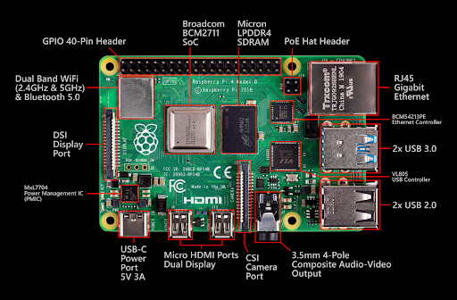

Sectiunea 1
Raspberry Pi 4 Model B este o platformă de calcul de tip single-board computer (SBC) care a redefinit standardele în categoria sa prin creșterea semnificativă a performanței, îmbunătățirea conectivității și extinderea posibilităților de utilizare. Față de versiunile anterioare, acest model poate fi utilizat nu doar în proiecte educaționale sau embedded, ci și ca sistem desktop complet pentru sarcini uzuale.
Sectiunea 2
Arduino nu este doar o companie sau o serie de microcontrolere, ci un întreg ecosistem tehnologic care a revoluționat modul în care oamenii interacționează cu electronica și programarea. În esență, Arduino reprezintă o platformă open-source destinată dezvoltării de proiecte electronice interactive, fiind concepută astfel încât să fie accesibilă atât începătorilor, cât și utilizatorilor avansați.
Exemplu Imagine

Sectiunea 3
La nivel arhitectural, Raspberry Pi 4 este construit în jurul circuitului integrat Broadcom BCM2711, un System on Chip bazat pe arhitectura ARMv8-A. Procesorul include patru nuclee Cortex-A72 (ARM64), fiecare capabil de execuție out-of-order, ceea ce permite o eficiență crescută în procesarea instrucțiunilor comparativ cu Cortex-A53 din generațiile anterioare. Frecvența standard este de 1.5 GHz, dar poate fi overclockată până la aproximativ 1.8–2.0 GHz, în funcție de răcire și stabilitatea sistemului. Cache-ul L1 și L2 contribuie la reducerea latențelor și la îmbunătățirea performanței generale. Subsistemul de memorie utilizează LPDDR4 SDRAM, disponibil în variante de 2 GB, 4 GB și 8 GB. Lățimea de bandă mai mare a memoriei (comparativ cu LPDDR2 din Raspberry Pi 3) permite rularea mai fluentă a aplicațiilor grafice și multitasking eficient. Controlerul de memorie este integrat în SoC și optimizează accesul concurent la resurse.
Sectiunea 4
Pe partea grafică, GPU-ul VideoCore VI oferă suport pentru OpenGL ES 3.0 și Vulkan (experimental), fiind capabil de decodare hardware pentru formate video H.265 (HEVC) 4Kp60 și H.264 1080p60. Encoderul hardware suportă H.264 până la 1080p30. Cele două porturi micro-HDMI permit configurații dual-display, fiecare suportând rezoluții de până la 4K, cu limitări de frecvență în funcție de configurație (de exemplu, dual 4K la 30 Hz sau un singur 4K la 60 Hz). Un element esențial al Raspberry Pi 4 este magistrala de interconectare îmbunătățită. Spre deosebire de Raspberry Pi 3, unde USB și Ethernet împărțeau aceeași magistrală, Raspberry Pi 4 utilizează un controler PCIe dedicat (PCIe Gen 2 x1) conectat la un chip USB 3.0
Sectiunea 5
(VL805), eliminând blocajele de bandă. Astfel, porturile USB 3.0 pot atinge viteze reale de transfer mult mai mari, iar interfața Gigabit Ethernet nu mai este limitată artificial la aproximativ 300 Mbps. Conectivitatea include: 2 porturi USB 3.0 și 2 porturi USB 2.0 Gigabit Ethernet (până la 1 Gbps real) Wi-Fi dual-band 802.11 b/g/n/ac (2.4 GHz și 5 GHz) Bluetooth 5.0 și BLE GPIO cu 40 de pini (compatibil cu HAT-urile anterioare) Interfețe CSI (camera) și DSI (display)
Sectiunea 6
Alimentarea prin USB-C furnizează 5V la 3A, ceea ce permite suport pentru periferice mai consumatoare. Totuși, consumul energetic mai ridicat duce la generare de căldură, motiv pentru care este recomandată utilizarea unui radiator sau a unui sistem de răcire activ (ventilator), mai ales în sarcini intensive sau overclocking. Stocarea principală se realizează prin card microSD, dar Raspberry Pi 4 suportă boot de pe USB (SSD sau stick USB), ceea ce crește considerabil performanța sistemului de operare și fiabilitatea. De asemenea, există suport experimental pentru boot prin rețea (PXE). Din punct de vedere software, Raspberry Pi 4 rulează sisteme de operare bazate pe Linux, cel mai popular fiind Raspberry Pi OS (32-bit sau 64-bit). Kernelul Linux oferă suport pentru driverele hardware integrate, iar ecosistemul include biblioteci precum WiringPi (deși depreciată), pigpio sau RPi.GPIO pentru controlul pinilor. Limbajul Python este frecvent utilizat datorită simplității și suportului extins.
Concluzie
Aplicațiile sunt diverse: servere web locale (Apache, Nginx) sisteme media center (Kodi, Plex) proiecte IoT (cu MQTT, Node-RED) emulare de console retro automatizări industriale ușoare sisteme de monitorizare și colectare de date Un avantaj major al platformei este comunitatea globală foarte activă, care oferă documentație, tutoriale și suport. De asemenea, ecosistemul hardware include numeroase module HAT (Hardware Attached on Top), care extind funcționalitatea (de exemplu, module GPS, DAC audio, controlere motoare). În concluzie, Raspberry Pi 4 reprezintă o platformă matură, capabilă să îndeplinească atât roluri educaționale, cât și sarcini semi-profesionale. Arhitectura sa modernă, performanța crescută și flexibilitatea îl transformă într-un instrument valoros pentru dezvoltatori, ingineri și pasionați de tehnologie.Apasa buttonul de mai jos pentru exercitii.